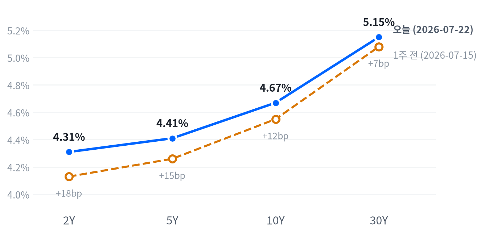

오늘 장을 관통한 동인은 두 갈래다. 하나는 전일 장마감 후 발표된 알파벳·테슬라 실적의 후폭풍으로, 알파벳은 매출·이익 서프라이즈에도 2026년 capex 가이던스를 최대 $205B로 큰 폭 상향하며 AI 투자 대비 수익성 우려를 재점화시켰고(-7%, 웹 보도), 테슬라는 매출 성장에도 영업이익률이 1.4%로 급감하며 장중 -13~14%대 급락했다(웹 보도). 다른 하나는 중동發 지정학 리스크로, 후티 반군의 사우디 유조선 공격과 카자흐스탄 CPC 터미널 수출 중단 우려가 겹치며 WTI(+6.25%)·브렌트(+6.91%, $100 돌파)가 급등했다.
크로스에셋 흐름은 대체로 정합적이다. 유가 급등이 인플레이션 재점화 우려를 자극하며 국채 금리(10Y 4.67%, 주간 +12bp)를 밀어 올렸고, 이는 실적 쇼크를 겪은 성장주 약세와 겹쳐 나스닥의 낙폭(-2.15%)을 다우(-0.97%)보다 훨씬 크게 만들었다.
다만 금(-2.29%)은 통상 지정학 리스크 국면에서 안전자산으로 강세를 보이는 경우가 많은데 이번엔 국채금리 급등에 따른 보유비용 부담이 더 크게 작용해 오히려 급락한 예외적인 자산이었고, 원화(USD/KRW -0.38%, 강세)도 달러 전반의 소폭 강세(DXY +0.29%)와 반대로 움직여 정합성이 낮았다.
다음 촉매는 두 갈래 리스크의 향방이다. 중동 정세가 추가로 격화되거나 반대로 완화 헤드라인이 나올 경우 유가·금리·주식 전반의 방향이 다시 흔들릴 수 있고, 남은 빅테크 실적에서 알파벳식 '서프라이즈에도 capex 부담' 서사가 반복되는지가 성장주 밸류에이션의 다음 분기점이 될 전망이다. 7월 29일 FOMC를 앞두고 CME FedWatch가 반영하는 금리 동결 우세(약 75~83%) 전망이 유지되는지도 확인해야 할 변수다.
| 지수 | 종가 | 등락 | 등락률 |
|---|---|---|---|
| S&P 500 Value | 229.30 | -1.43 | -0.62% |
| Russell 2000 | 2,940.16 | -19.78 | -0.67% |
| Dow | 51,711.65 | -506.93 | -0.97% |
| S&P 500 | 7,408.30 | -90.66 | -1.21% |
| S&P 500 Growth | 133.59 | -2.38 | -1.75% |
| Nasdaq | 25,137.69 | -553.21 | -2.15% |
| 섹터 | 종가 | 등락 | 등락률 |
|---|---|---|---|
| Industrials | 181.94 | +3.09 | +1.73% |
| Health Care | 161.44 | +2.01 | +1.26% |
| Utilities | 46.19 | +0.26 | +0.57% |
| Energy | 59.38 | +0.18 | +0.30% |
| Real Estate | 44.95 | -0.06 | -0.13% |
| Financials | 55.83 | -0.22 | -0.39% |
| Technology | 178.45 | -1.82 | -1.01% |
| Materials | 50.29 | -0.53 | -1.04% |
| Consumer Staples | 83.21 | -1.17 | -1.39% |
| Comm. Services | 105.38 | -3.82 | -3.50% |
| Consumer Disc. | 108.76 | -5.26 | -4.61% |
나스닥은 개장(25,240.65) 직후인 09:30에 하루 고점(25,356.33, 시가 대비 +0.46%)을 찍었으나 이후 매물이 이어지며 11:30에는 시가 대비 -1.12%까지 밀린 저점(24,957.01)을 형성했다. 낙폭을 소폭 되돌리기는 했지만 종가(25,138.57)가 저점 부근에 머물러 뚜렷한 오후 반등은 나타나지 않았다.
S&P500(개장 7,418.29 → 09:30 고점 +0.43% → 11:30 저점 -0.57% → 종가 7,408.18)과 러셀2000(개장 2,943.30 → 09:30 고점 +0.31% → 11:30 저점 -0.64% → 종가 2,940.07)도 나스닥과 동일한 궤적을 그렸다. 다만 러셀2000의 낙폭이 상대적으로 작았는데, 이는 대형 기술주 실적 충격의 직격탄을 덜 받았기 때문으로 볼 수 있다.
이 오전 매도세의 기폭제는 전일 장마감 후 발표된 알파벳·테슬라 실적이었다. 알파벳은 매출·이익 서프라이즈에도 2026년 capex 가이던스를 대폭 상향하며 개장 전부터 투자심리를 눌렀고, 테슬라의 수익성 악화 충격까지 겹치며 개장 초 고점 이후 매물이 쏟아졌다. 오후 들어서는 유가가 랠리를 이어가며(WTI는 14:00까지 고점 경신) 위험자산 심리를 추가로 억눌러 반등 시도가 힘을 받지 못했다.
엔비디아는 개장(209.40) 직후 09:30 고점(210.87, +0.70%)을 찍은 뒤 반도체·AI 관련주 전반의 매도 압력에 11:30 저점(205.96, -1.64%)까지 밀렸다가 소폭 반등해 종가 기준 -1.56%로 마감, 지수와 유사한 오전 고점-오후 약세 패턴을 반복했다.
커뮤니케이션서비스(-3.50%)·자유소비재(-4.61%)는 각각 알파벳·테슬라 실적 후폭풍의 직접 파급으로 최대 낙폭 섹터가 됐다. 알파벳은 매출·이익 모두 서프라이즈였음에도 2026년 capex 가이던스를 기존 $180~190B에서 $195~205B로 큰 폭 상향한 점이 밸류에이션 재평가 우려를 자극했고, 테슬라는 매출 서프라이즈에도 영업이익률이 1.4%로 급감하며 수익성 우려가 부각됐다.
반면 산업재(+1.73%)가 가장 강한 하루를 보냈고 헬스케어(+1.26%)·유틸리티(+0.57%)·에너지(+0.30%)도 방어주·실물자산 성격에 힘입어 상승했다. 성장주 약세 국면에서 이들 섹터가 상대적 안전지대 역할을 한 셈이다.
포지셔닝 관점에서는 이번 로테이션이 단기 조정에 그칠지, 밸류에이션 리레이팅의 시작일지가 관건이다. 알파벳 -7%, 테슬라 장중 -13~14%대 급락(웹 보도 기준)이 보여주듯 시장은 AI 투자 대비 수익성(ROI) 입증을 더 엄격하게 요구하고 있어, 남은 빅테크 실적에서 유사한 서사가 반복될 경우 추가 매물 출회에 대비할 필요가 있다.
| 만기 | 07-22 종가 | 전일比(bp) | 1주 전(07-15) | 주간 변화(bp) |
|---|---|---|---|---|
| 2Y | 4.31% | +5bp | 4.13% | +18bp |
| 5Y | 4.41% | +4bp | 4.26% | +15bp |
| 10Y | 4.67% | +4bp | 4.55% | +12bp |
| 30Y | 5.15% | +2bp | 5.08% | +7bp |

2Y·5Y·10Y·30Y 국채금리, 오늘(2026-07-22 FRED 기준)과 1주 전(2026-07-15) 비교. 전 구간 상승했으나 단기물 상승폭이 더 커 커브가 눌렸다.
2s10s 스프레드는 오늘(FRED 07-22 기준) 36bp로 1주 전(07-15) 42bp에서 6bp 줄었다. 전 구간 금리가 상승한 가운데 2Y가 +18bp로 10Y(+12bp)·30Y(+7bp)보다 더 크게 올라 전형적인 베어 플래트닝(bear flattening) 흐름이다 — 유가발 인플레이션 재점화 우려가 단기 정책금리 경로 전망에 더 강하게 반영됐다는 뜻이다.
일간 변화도 같은 방향이다(2Y +5bp ≥ 5Y·10Y +4bp > 30Y +2bp). 참고로 야후 파이낸스 동일자(07-23) 스팟금리는 10Y 4.70%, 5Y 4.46%, 30Y 5.17%로 FRED 07-22치보다 한 단계 더 높아, 유가 급등이 이어진 이날 장중에도 추가 상승 압력이 실재했음을 뒷받침한다.
포지셔닝 관점에서는 단기물 숏 듀레이션이 유리한 국면이 이어지고 있다. 브렌트유가 $100을 넘어서며 인플레이션 기대를 자극하는 한 2Y가 정책금리 재가격을 가장 먼저 반영하기 때문에 단기구간 익스포저를 축소하고 장기물 비중을 상대적으로 유지하는 전략이 합리적이다. 다만 7월 29일 FOMC 결과 확인 전까지 방향성 베팅을 확대하는 것은 이르다.
| 통화쌍 | 종가 | 등락 | 등락률 |
|---|---|---|---|
| DXY | 101.44 | +0.30 | +0.29% |
| USD/KRW | 1,474.11 | -5.61 | -0.38% |
| USD/JPY | 163.83 | +0.64 | +0.39% |
| EUR/USD | 1.1380 | -0.0023 | -0.20% |
USD/JPY는 개장(163.11) 이후 이른 시간대인 02:30에 저점(162.99, 시가 대비 -0.07%)을 살짝 찍은 뒤 꾸준히 올라 15:30에 고점(163.99, +0.54%)을 기록했고 종가(163.85)도 고점 부근에서 마감했다. 국채 금리 급등이 하루 종일 엔화 약세 압력으로 작용한 흐름이다.
DXY(+0.29%)는 국채금리 급등이라는 달러 강세 재료에도 지정학 리스크에 따른 안전자산 분산 수요가 일부 상쇄돼 상승폭이 크지 않았다. EUR/USD(-0.20%)는 달러 강세 흐름에 부합하는 방향이었던 반면, USD/KRW(-0.38%, 원화 강세)는 반대 방향으로 움직여 이날 FX 시장은 페어별 온도차가 컸다.
| 품목 | 종가 | 등락 | 등락률 |
|---|---|---|---|
| WTI | $92.26 | +5.43 | +6.25% |
| Brent | $100.57 | +6.50 | +6.91% |
| Natural Gas | $2.909 | -0.016 | -0.55% |
| Gold | $4,052.00 | -94.90 | -2.29% |
최대 변동 품목은 Brent로 +6.91% 급등하며 $100.57에 마감, 5월 26일 이후 처음으로 $100선을 다시 넘어섰다. WTI도 +6.25% 뛰었다.
WTI는 아시아장 초반인 01:30에 저점(87.66, 시가 대비 -0.90%)을 찍은 뒤 뉴욕 오후(14:00)까지 랠리가 이어지며 고점(93.50, 시가 대비 +5.70%)을 형성했고 이 상승분을 대부분 유지한 채 마감했다. 예멘 후티 반군의 사우디 유조선 공격 주장과 카자흐스탄 CPC 터미널 수출 일시 중단 소식이 공급 차질 우려를 키운 것으로 보도된다(Bloomberg, CNBC, FXLeaders, GuruFocus).
금은 반대 방향이었다. 아시아 개장 직후인 01:30에 고점(4,133.40)을 찍은 뒤 국채금리 급등에 따른 보유비용 부담으로 미국 오전 10:00까지 낙폭이 확대돼 저점(4,042.50)을 형성했고, 이후 소폭 반등했지만 전일比 -2.29%로 마감했다.
트럼프 대통령이 이란에 대한 "대규모 공격" 가능성을 시사한 점도 유가 상승세를 뒷받침했고, 7월 한 달간 유가는 이미 30% 이상 급등한 상태다.
| 자산군 | 판단 | 근거 |
|---|---|---|
| 주식 | 비중축소·선별 | AI capex 대비 수익성을 입증하지 못한 대형 성장주(알파벳·테슬라식 서사)는 회피하고, 산업재·헬스케어·유틸리티 등 방어섹터 상대비중을 확대. 남은 빅테크 실적 확인 전까지 지수 방향성 베팅은 자제 |
| 채권 | 단기물 숏 듀레이션 | 2Y 중심 베어 플래트닝이 이어지는 국면. 7월 29일 FOMC 전까지 커브 플래트너 유지, 결과 확인 후 장기물 비중 확대 검토 |
| FX | 중립·관망 | DXY는 금리 상승과 안전자산 분산이 상쇄돼 방향성이 약한 반면 원화는 반대로 강세를 보이는 등 페어별 온도차가 커 방향성 베팅보다 관망이 유효 |
| 원자재 | 비중확대 유지 | 중동 확전 리스크가 지속되는 한 유가 강세 여지가 남아있음. 다만 외교적 완화 헤드라인 시 되돌림 폭이 클 수 있어 트레일링 손절 필요 |
| 메모리 | 구조적 비중확대 | AI 데이터센터發 DRAM·NAND 공급부족이 2028년까지 이어질 전망(도이체방크). 마이크론·삼성전자·SK하이닉스 3사 동반 강세가 사이클의 견조함을 재확인시켜 눌림목 매수 관점 유효 |
| AI 인프라 | 종목 선별 필요 | GE Vernova는 매출 서프라이즈·가이던스 상향에 힘입어 전일 급락을 되돌렸지만 마벨은 유일하게 하락. 수주잔고·가이던스 추세가 뒷받침되는 종목과 그렇지 못한 종목을 구분할 필요 |
중동 확전 지속: 이란 관련 군사적 긴장이 격화되거나 홍해·카스피해 항로 차질이 실제 공급 감소로 이어지면 유가가 추가 급등하며 금리 상승과 위험자산 재차 압박이라는 오늘의 패턴이 반복될 수 있다. 이 경우 9월 FOMC 이전에도 시장의 금리 인상 반영 확률이 더 높아질 소지가 있다.
AI capex 부담 서사 확산: 알파벳식 '실적 서프라이즈에도 capex 가이던스 부담'이 다른 대형 기술주(마이크로소프트·메타·아마존 등)로 번질 경우, 실적 시즌 내내 성장주·나스닥 전반의 밸류에이션 리레이팅 압력이 이어질 위험이 있다.
확전 완화·유가 급반전: 외교적 진전이나 휴전 관련 헤드라인이 나올 경우 유가 프리미엄이 빠르게 빠지며 오늘의 로테이션(방어섹터 강세, 성장주 약세)이 그대로 되돌려질 수 있다. 원자재 롱 포지션은 이 시나리오에 대비한 손절선을 사전에 설정해둘 필요가 있다.
자유소비재 섹터 (-4.61%, 당일 최대 낙폭) — 전일 장마감 후 발표된 테슬라 실적이 섹터 전체를 끌어내린 것으로 파악된다. 테슬라는 매출 $28.24B(전년比 +25.5%)로 컨센서스를 상회했지만 조정 EPS $0.33이 컨센서스 $0.54를 밑돌았고, 영업이익률이 전년比 2.7%p 하락한 1.4%로 급감하며 잉여현금흐름은 -$10.9억(마이너스)을 기록했다. AI·로보틱스(로보택시, 휴머노이드 로봇) 투자 확대에 따른 비용 부담이 수익성 훼손의 배경으로 지목됐고 주가는 장중 -13~14%대까지 급락한 것으로 보도됐다(24/7 Wall St, MarketBeat, Motley Fool).
커뮤니케이션서비스 섹터 (-3.50%) — 알파벳 실적 후폭풍이 배경이다. 2분기 매출 $119.8B, 조정 EPS $9.11로 컨센서스($2.88)를 큰 폭 상회하고 구글클라우드 매출도 전년比 +82% 서프라이즈였지만, 2026년 capex 가이던스를 기존 $180~190B에서 $195~205B(중간값 $200B)로 상향하고 2027년 지출도 크게 늘 것이라 예고하면서 AI 투자 대비 수익성(ROI) 우려가 재점화됐다. 주가는 -7% 급락해 14개월 만의 최악의 하루를 기록한 것으로 보도됐다(Motley Fool, CNBC, Bloomberg, 스코페스 리서치).
GE Vernova (+4.69%, AI 인프라 최대 상승) — 전일(7/22) 실적에서 조정 EPS $2.41이 컨센서스($3.04)를 20.6% 밑돌았지만 매출 $11.10B은 컨센서스를 2.9% 상회했고, Power·Electrification 부문 마진 확대와 2026년 가이던스 2차 상향이 부각되며 전일 -9% 급락 이후 이날 반등에 성공했다. AI 데이터센터發 전력 수요 확대(가스터빈 세계 1위, 수주잔고가 2030년 생산분까지 예약)가 배경으로 거론된다.
| 종목 | 종가 | 등락 | 등락률 |
|---|---|---|---|
| Micron | $990.21 | +30.73 | +3.20% |
| Western Digital | $558.30 | +1.63 | +0.29% |
| Seagate | $913.36 | +5.26 | +0.58% |
| Nvidia | $208.76 | -3.30 | -1.56% |
| Samsung Elec | ₩270,000 | +9,500 | +3.65% |
| SK hynix | ₩1,919,000 | +89,000 | +4.86% |
업계 보도에 따르면 7월 글로벌 메모리 매출이 전월比 +31.7%인 746억 달러로 사상 최대치를 기록했고, DRAM 현물가는 지난 1년간 약 700% 급등한 것으로 나타났다(24/7 Wall St, Benzinga 종합).
UBS는 3분기 DRAM 계약가가 +32%, 4분기에는 +18% 추가 상승할 것으로 전망했고 NAND도 각각 +30%/+12% 오를 것으로 봤다. AI向 저장수요 확대로 NAND 매출도 전월比 +40.7%(258억 달러)까지 급증했다.
삼성전자·SK하이닉스·마이크론 3사가 DRAM·HBM 공급의 약 90%(HBM은 사실상 전량)를 차지하는 가운데, 도이체방크는 2026년 DRAM 수급 갭을 약 10%(공급 부족)로, 2028년에는 29%까지 확대될 것으로 추정했다. SK하이닉스 역시 공급 부족이 2028년까지 지속될 것이라고 경고한 것으로 보도됐다.
오늘 3사 모두(마이크론 +3.20%, 삼성전자 +3.65%, SK하이닉스 +4.86%) 동반 강세를 보이며 메모리 슈퍼사이클 서사가 재확인됐다. AI 데이터센터發 구조적 공급부족이 2028년까지 이어질 것이라는 전망을 감안하면, 단기 변동성보다 사이클 자체에 베팅하는 비중확대 전략이 여전히 유효하다.
| 종목 | 분야 | 종가 | 등락 | 등락률 |
|---|---|---|---|---|
| Marvell | 반도체/데이터센터 커넥티비티 | $209.32 | -1.67 | -0.79% |
| Coherent | 광통신 부품 | $313.22 | +1.03 | +0.33% |
| Lumentum | 광통신 부품 | $833.64 | +3.94 | +0.47% |
| GE Vernova | 전력 인프라/터빈 | $1,031.19 | +46.16 | +4.69% |
| Vertiv | 데이터센터 냉각/전력관리 | $304.04 | +2.88 | +0.96% |
GE Vernova(+4.69%)가 가장 큰 상승폭을 기록했다. 전일(7/22) 실적에서 조정 EPS $2.41은 컨센서스($3.04)를 20.6% 밑돌았지만 매출 $11.10B은 컨센서스를 2.9% 상회했고, Power·Electrification 부문 마진 확대와 2026년 가이던스 2차 상향이 부각되며 전일 -9% 급락 이후 반등에 성공했다. AI 데이터센터發 전력 수요 확대(가스터빈 세계 1위, 수주잔고가 2030년 생산분까지 예약)가 배경으로 지목된다.
버티브(+0.96%)·루멘텀(+0.47%)·코히런트(+0.33%)는 완만한 상승을 기록했고 마벨(-0.79%)만 유일하게 하락했다. GE Vernova를 제외하면 이날은 개별 뉴스 촉매보다 AI 데이터센터 인프라 섹터 전반의 완만한 흐름에 가까웠다.
최근 업계 동향으로는 마벨과 루멘텀이 OFC 2026에서 차세대 AI 스케일업 인프라用 광회로스위칭(OCS) 공동 시연을 발표했고, 마벨은 업계 최초 1.6테라비트 ZR/ZR+ 모듈(2나노 코히런트 DSP 플랫폼, 샘플링 단계)을 공개했다. 애널리스트들은 2026~2029년 마벨 조정 EBITDA CAGR을 44%, 코히런트 2025~2028년 44%, 버티브 2025~2028년 38%로 각각 전망하고 있다(Motley Fool, Marvell IR).
투자 관점에서는 AI 데이터센터 전력·냉각·광통신 밸류체인 전반의 장기 성장 스토리는 유효하나, GE Vernova의 변동성이 보여주듯 EPS 미스에도 매출·가이던스가 뒷받침되면 주가가 반등할 수 있다는 점에서 단기 실적 서프라이즈보다 수주잔고·가이던스 추세를 더 중요하게 볼 필요가 있다.
| 지표 | Actual | Forecast | Previous | 발표일/기준월 | 판정 |
|---|---|---|---|---|---|
| Initial Jobless Claims (07-18주) | 187K | 212K | 209K | 2026-07-23 | 하회▼ |
| Continuing Jobless Claims (07-11주) | 1,796K | 1,807K | 1,798K | 2026-07-23 | 하회▼ |
| Initial Claims 4주 이동평균 | 207.5K | — | 214.75K | 기준: 2026-07-18주 | — |
| Nonfarm Payrolls (전월비) | +57K | — | +129K | 기준월: 2026-06 | — |
| 실업률 | 4.2% | — | 4.3% | 기준월: 2026-06 | — |
| 시간당 평균임금 MoM | +0.35% | — | +0.27% | 기준월: 2026-06 | — |
| JOLTS 구인건수 | 7,594K | — | 7,585K | 기준월: 2026-05 | — |
| 지표 | Actual | Forecast | Previous | 발표일/기준월 | 판정 |
|---|---|---|---|---|---|
| 산업생산 MoM | +0.08% | — | +0.14% | 기준월: 2026-06 | — |
| 내구재수주 MoM | -4.47% | — | +8.51% | 기준월: 2026-05 | — |
| 신규주택판매 | 580K | — | 626K | 기준월: 2026-05 | — |
| 기존주택판매 | 4.09M | — | 4.19M | 기준월: 2026-06 | — |
| 실질GDP 성장률 (연율, QoQ) | +2.1% | — | +0.5% | 기준분기: 2026 Q1 | — |
| 지표 | Actual | Forecast | Previous | 발표일/기준월 | 판정 |
|---|---|---|---|---|---|
| 소매판매 MoM | +0.22% | — | +1.02% | 기준월: 2026-06 | — |
| 미시간대 소비자심리지수 | 44.8 | — | 49.8 | 기준월: 2026-05 | — |
| 지표 | Actual | Forecast | Previous | 발표일/기준월 | 판정 |
|---|---|---|---|---|---|
| CPI YoY | 3.73% | — | 4.27% | 기준월: 2026-06 | — |
| CPI MoM | -0.42% | — | +0.47% | 기준월: 2026-06 | — |
| Core CPI YoY | 2.81% | — | 2.96% | 기준월: 2026-06 | — |
| Core CPI MoM | -0.02% | — | +0.21% | 기준월: 2026-06 | — |
| PPI 최종수요 MoM | -0.28% | — | +0.62% | 기준월: 2026-06 | — |
| PCE Price Index YoY | 4.07% | — | 3.80% | 기준월: 2026-05 | — |
| Core PCE YoY | 3.41% | — | 3.32% | 기준월: 2026-05 | — |
| 미시간대 1년 기대인플레 | 4.8% | — | 4.7% | 기준월: 2026-05 | — |
신규 실업수당청구가 187K로 컨센서스(212K)와 전주(209K)를 큰 폭 밑돌며 1969년 이후 최저 수준을 기록했고, 지속청구건수도 1,796K로 컨센서스(1,807K)를 밑돌아 노동시장이 표면적으로 견조하다는 점이 다시 확인됐다. 다만 이 호실적이 오늘 채권시장에서는 오히려 금리 상승 요인으로 작용했는데, 유가발 인플레이션 우려가 이미 시장을 지배하는 가운데 견조한 고용지표가 연준의 완화 여력을 더 제한한다는 해석이 겹쳤기 때문이다.
CME FedWatch 기준 7월 29일 FOMC에서는 금리 동결 확률이 74.9~83.4%로 여전히 우세하고 0.25%p 인상 확률은 25.1%대에 그쳐, 인하 가능성은 사실상 반영되지 않고 있다. 일부 매체가 보도한 폴리마켓(Polymarket)의 "2026년 내 금리 인상" 베팅 71%는 FedWatch가 반영하는 단기(7월 회의) 동결 우세 전망과는 결이 다른 별개 지표이므로 혼동하지 않도록 구분해서 봐야 한다.
컨센서스 괴리 측면에서는 CPI(6월 3.73%, 전월 4.27%)가 둔화된 반면 PCE(5월 4.07%, 전월 3.80%)는 오히려 반등해, 지표 간 시차와 방향 불일치가 시장의 정책금리 경로 재해석을 어렵게 만들고 있다.
이번 세션에는 신규 발표된 선행 심리지표(ISM·PMI 등)가 없어 직접 비교는 어렵지만, 노동시장 선행지표인 신규·지속 실업수당청구가 나란히 컨센서스를 밑돌며 심리·기대 측면에서는 개선 신호가 뚜렷했다.
중행 지표인 활동 축은 둔화 일변도다. 산업생산(+0.08%, 전월 +0.14%)·내구재수주(-4.47%, 전월 +8.51%)·신규주택판매(580K, 전월 626K)·기존주택판매(4.09M, 전월 4.19M)가 모두 전월보다 약해졌다. 다만 2026년 1분기 실질GDP는 +2.1%로 직전 분기(+0.5%)보다 크게 개선돼, 후행 성적표와 최근 실물 흐름 사이에는 온도차가 있다.
후행 고용·물가 지표는 혼재된 신호를 보였다. 6월 비농업고용은 +57K로 전월(+129K) 대비 큰 폭 둔화됐고 실업률은 4.2%로 소폭 개선됐다. 물가 쪽은 CPI·Core CPI가 나란히 전월보다 둔화된 반면 PCE·Core PCE는 오히려 전월보다 높아져(YoY 기준) 두 물가 지표 시리즈의 방향이 엇갈렸다. 오늘 발표된 실업수당청구(선행)의 개선과 6월 비농업고용(후행)의 둔화도 서로 다른 방향을 가리켜, 축 내부에서조차 선행·후행 신호가 일치하지 않는 혼조 국면이다.
기본 시나리오는 노동시장이 표면적으로 견조함(낮은 실업수당청구)을 유지하는 가운데 유가발 공급충격이 7~8월 CPI·PCE에 일시적으로만 반영되는 경로다. 6월 CPI YoY가 3.73%까지 이미 둔화된 점을 감안하면 디스인플레이션 추세 자체는 유효하며, 연준이 유가 충격을 공급측 요인으로 간주해 7월 29일 FOMC에서 동결을 유지할 확률이 높다(FedWatch 74.9~83.4%).
대안 시나리오는 브렌트유의 $100 상회가 몇 주 더 이어지며 미시간대 1년 기대인플레이션(4.8%, 전월 4.7%로 이미 상승 중)을 추가로 자극해 연준이 인상 쪽으로 기울어지는 경로다. 폴리마켓의 "2026년 내 금리 인상" 베팅이 71%까지 치솟았다는 보도는 이 시나리오에 대한 시장 일각의 경계감을 반영한다고 볼 수 있다.
시나리오를 가를 핵심 일정은 7월 29일 FOMC와 8월 초 발표될 7월 고용·CPI 지표, 그리고 중동 정세 헤드라인이다. 자산배분 관점에서는 두 시나리오 모두에서 원자재·에너지 비중 유지가 유효하지만, 장기 듀레이션 채권과 고밸류에이션 성장주는 FOMC 결과 확인 전까지 비중을 보수적으로 가져가는 전략이 합리적이다.